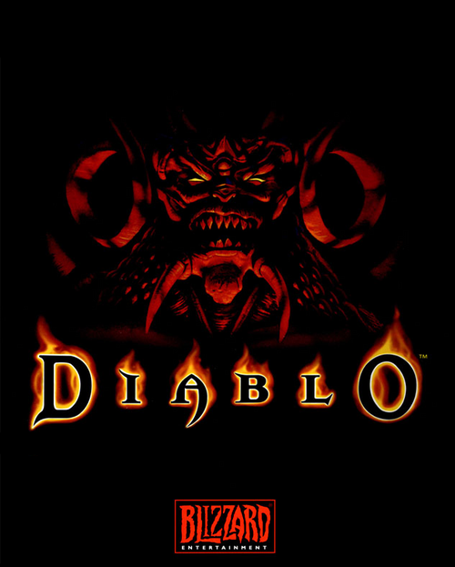

이전까지 복잡했던 롤플레잉 게임의 방식을 배제하고 조작과 게임플레이를 단순화함으로써 액션 롤플레잉 게임이란 장르를 대중화했다. 이전의 RPG와 달리 던전을 탐험하며 돈과 아이템을 모으고 최종보스를 무찌르는 것에만 신경쓰면 되는 심플한 구성을 가지고 있다. 원래는 턴제로 기획했다가 갑작스럽게 액션 롤플레잉으로 노선을 변경했다. 이에 대한 자세한 내용은 아래 개발 배경 문단에서 설명한다. 해외에서는 핵 앤 슬래시(Hack and slash)라는 명칭으로 디아블로의 전투를 설명하는데, 대충 간단한 클릭 몇 번으로 근접무기를 휘둘러 적을 무찌르는 액션 롤플레잉 장르를 뜻한다. 사실 이 단어는 디아블로 이전에도 있었던 것으로 문맥에 따라서 쓰임이 조금씩 다르다.
Windows 95 시절에 나온 고전게임인 만큼 Windows 10이 설치된 PC에서 정상구동하기엔 많은 난관[3]이 있는 게임이었지만 호환성 문제는 2019년 3월에 GOG에서 재출시하면서 해결되었다.